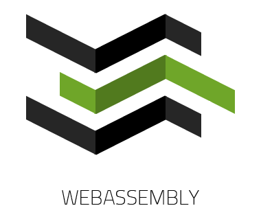
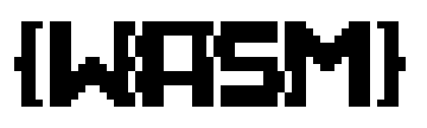
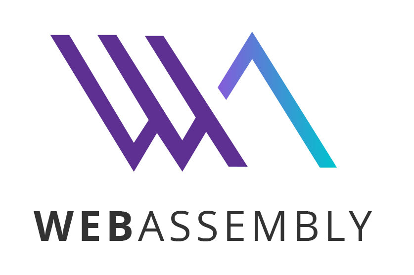
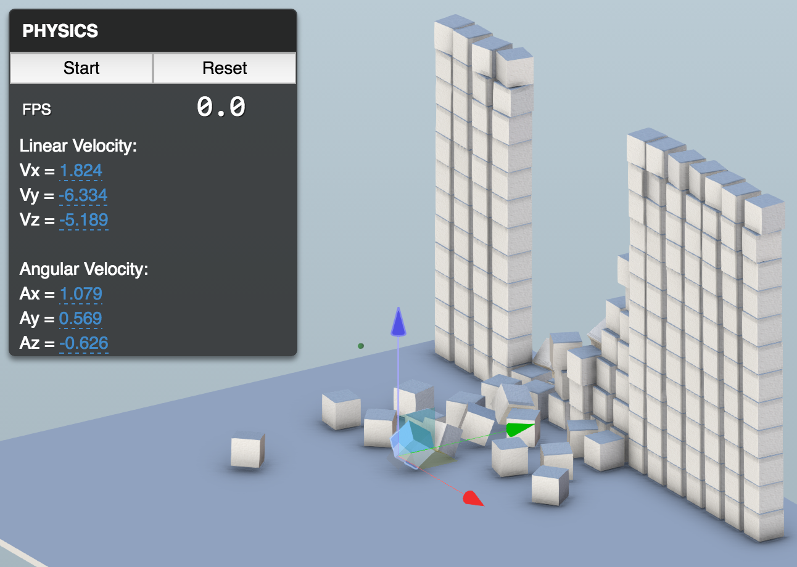
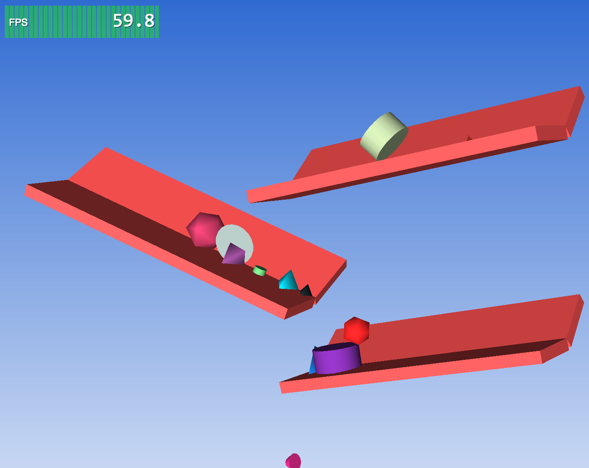

BOOST YOUR WEB APPLICATION
WITH C++
Philippe Leefsma
/
@F3lipek
Forge Partner Development


AGENDA
I -
Emscripten / asm.js / Web Assembly
II -
Getting Started
III -
Performnace Tests & Demos!
I - Emscripten / asm.js / Web Assembly
( Credits to Alon Zakai / @kripken for the slides )Mozilla
An open source
LLVM-based
compiler
from C/C++ to JavaScript
C++ ⇒ LLVM ⇒ Emscripten ⇒ JS

Collection of modular & reusable
compiler & toolchain technologies
-
LLVMCore libraries
Modern source- and target-independent optimizer -
Clang
"LLVM native" C/C++/Objective-C compiler -
libc++
High-performance implementation
of the C++ Standard Library - . . .
- Began in 2010
-
Most of the codebase is not the core compiler
but libraries + toolchain + test suite
float array[5000]; // C++
int main() {
for (int i = 0; i < 5000; ++i) {
array[i] += 1.0f;
}
}
⇒
function main() { // JavaScript
var a = 0, b = 0;
do {
a = (8 + (b << 2)) | 0;
HEAPF32[a >> 2] = +HEAPF32[a >> 2] + 1.0;
b = (b + 1) | 0;
} while ((b | 0) < 5000);
This is asm.js
asm.js
- Low-level subset of JavaScript - not a new language
- No new semantics, 100% backwards compatible
- Extremely easy to optimize by JS engines
- Avoids potential slowdowns in code
- No variables with mixed types
- Only low-level assembly-like computation
- . . .
Web Assembly
|  |  |  |
( no official logo yet! )
Web Assembly = Binary executable format for the web
New web standard, multi-vendor cooperation

For WebAssembly to succeed we need two things:
1. Browsers to support WebAssembly natively
2. Compilers that emit WebAssembly
Already a few compilers in the works:
New WebAssembly backend in LLVM
by sunfish and others
ilwasm for .NET/CIL
Longer-term efforts... We want to test and launch WebAssembly ASAP
What to do?
C++ ⇒ Emscripten ⇒ asm.js
+
asm.js ⇒ asm2wasm ⇒ WebAssembly
asm2wasm : Compile asm.js ⇒ WebAssembly
Part of Binaryen
(Binary + Emscripten):
an extensible WebAssembly infrastructure library
written in C++

C++ ⇒ Emscripten+Binaryen ⇒ wasm
Runnable today, using the wasm.js compiled interpreter
- a slow polyfill -
And when browsers have native support for WebAssembly
the same build should just work
- fast! -
Summary
Emscripten + Binaryen provide a
C++ to WebAssembly solution
today
Also helping with experiments and prototyping
for the WebAssembly design process
Binaryen can help grow
the WebAssembly toolchain ecosystem
II - Getting Started with Emscripten
#Fetch the latest registry of available tools
./emsdk update
# Download and install the incoming SDK tools (Binaryen Support)
./emsdk install sdk-incoming-64bit
# Make the "latest" SDK "active"
./emsdk activate sdk-incoming-64bit
Compiling hello_world.c
emcc tests/hello_world.c -o hello.html

Exposing C++ classes
to JavaScript
python ~/emsdk/emscripten/incoming/tools/webidl_binder.py bindings.idl glue
Generating asm.js
//Step 1 -> generating LLVM bytecode
make
//Step 2 -> generating asm.js
emcc -s ParticleSystem.bc --post-js glue.js -o ParticleSystem.asm.js
Generating WebAssembly
//Step 1 -> generating LLVM bytecode
make
//Step 2 -> generating wasm
emcc -s BINARYEN=1 ParticleSystem.bc --post-js glue.js -o ParticleSystem.js
Loading wasm in your Web Page
var Module = Module || {}
//'WEB' / 'WORKER' / 'NODE' / 'SHELL'
Module['ENVIRONMENT'] = 'WEB'
Module.wasmBinaryFile = './wasm/ParticleSystem.wasm'
var xhr = new XMLHttpRequest()
xhr.open('GET', './wasm/ParticleSystem.wasm', true)
xhr.responseType = 'arraybuffer'
xhr.onload = function() {
Module.wasmBinary = xhr.response
var script = document.createElement('script')
script.src = "./wasm/ParticleSystem.js"
document.body.appendChild(script)
}
xhr.send(null)
Debugging
Optimized -O2 output is minified by default
function a(a,b){a=a|0;b=b|0;f(a+b|0);}

-g1 : preserve whitespace
function a(a, b) {
a = a | 0;
b = b | 0;
f(a + b | 0);
}
-g2 : preserve function names
function _addAndPrint(a, b) {
a = a | 0;
b = b | 0;
_printAnInteger(a + b | 0);
}
-g3 (or just -g) : preserve variable names
function _addAndPrint($left, $right) {
$left = $left | 0;
$right = $right | 0;
_printAnInteger($left + $right | 0);
}
Not always match exactly original variable names in source
but often quite close
-g4 : source maps
Show the C/C++ source code in your browser's debugger!
Works in Firefox, Chrome and Safari
Performance Tests
Autodesk Forge Viewer
THREE.js Test
Forge Viewer / LHC
RESOURCES
+
Forge Viewer Integration Demo
http://physics.autodesk.io
three.js demo  


-
COMPILE CODE TO JS
-
C/C++ : Emscripten, Mandreel -
Java : Google Web Toolkit (GWT) -
C# : JSIL, Script# -
Python : pyjs -
Lua : lua.js -
CoffeeScript, TypeScript, Dart, ... - Jeremy Ashkenas's list
BOOST YOUR WEB APPLICATION
WITH C++
Philippe Leefsma
/
@F3lipek
Forge Partner Development